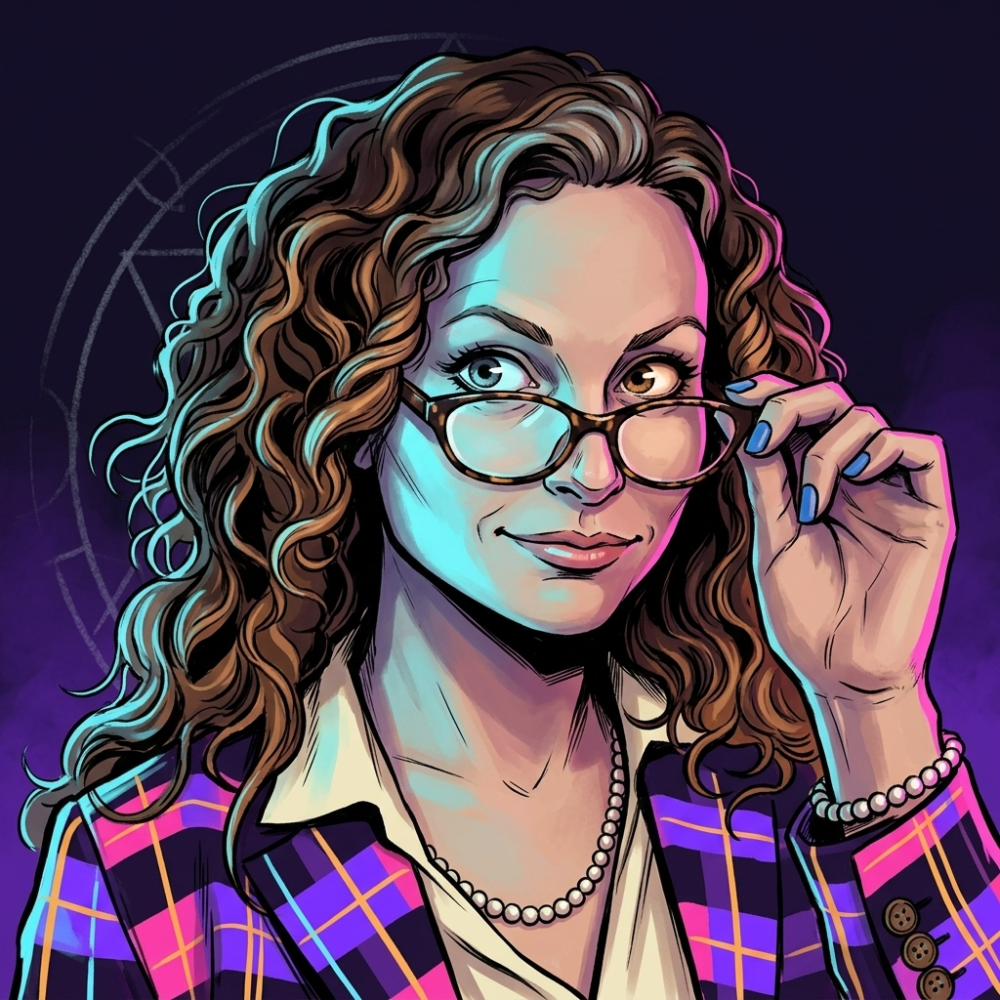
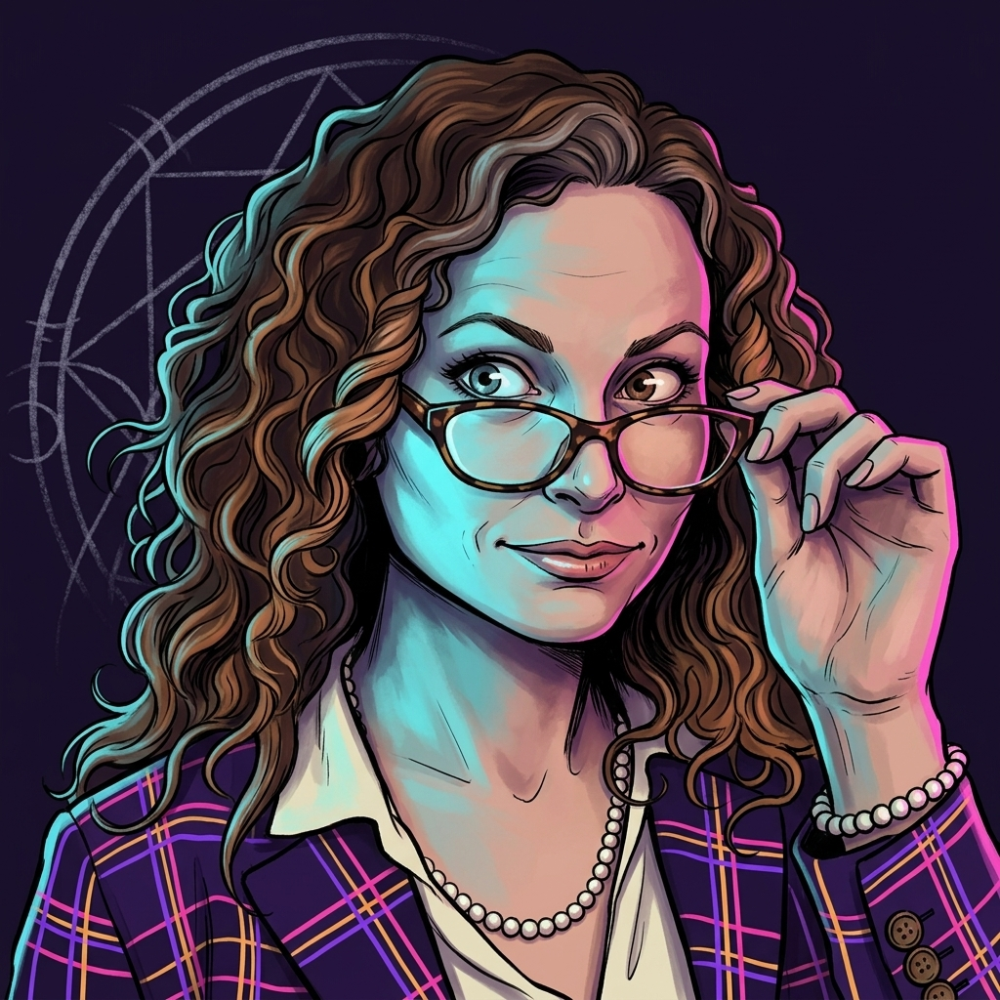
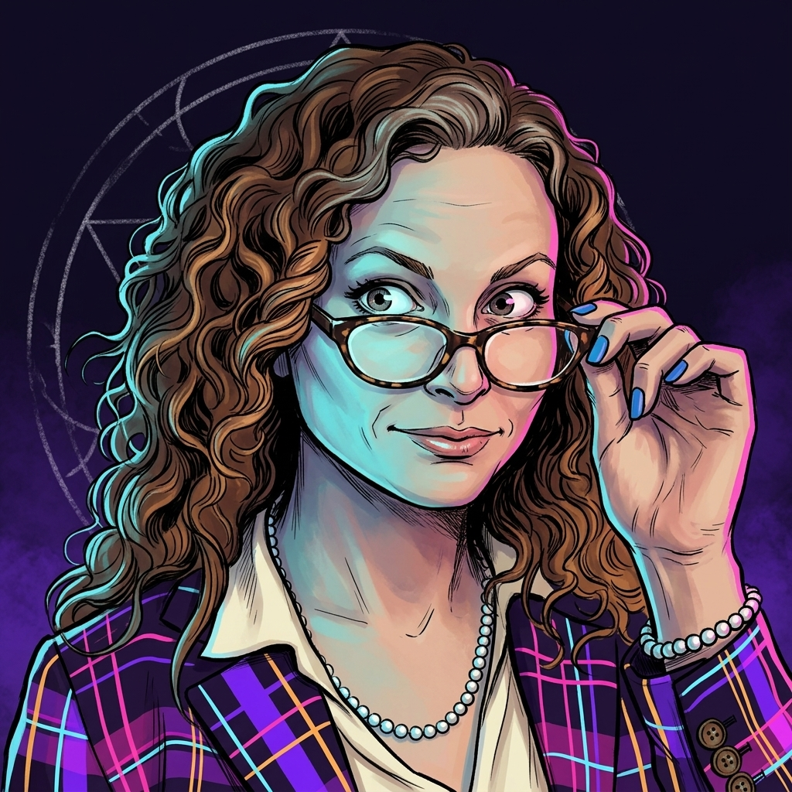

Round 1 · Concept
Take Jaye Anne's existing photographic headshot (curly warm-brown hair, tortoiseshell round glasses pulled down with her right hand, playful peek-over-the-glasses expression, pearl necklace, multi-colored plaid blazer, cream blouse) and re-medium it as a dark graphic novel / occult editorial plate author portrait in the Feral Architecture brand palette — matching the lighting signature of Matt's existing author portrait so the two read as a pair on the Rewired landing page.
Keep: face structure, curly hair, glasses position, the peek-over gesture, the one-eyebrow-raised playful expression, pearls, plaid blazer silhouette and pattern, cream blouse underneath.
Change: medium from photograph to illustrated painted plate. Background from gray studio to Void Purple void. Studio lighting to Feral Architecture chiaroscuro — Ion Glow cyan rake from viewer's upper-left, Neon Magenta rim from viewer's right, Electric Violet atmospheric depth. The multi-color plaid is translated into an ARCÆON-family plaid (magenta / violet / cyan over Void Purple, with Fusion Gold as the warm secondary windowpane lines) — pattern preserved, hues remapped. Faint chalked partial sigil barely visible behind the left shoulder.
Reference · Jaye Anne source headshot.png



Pairing check: Once a winner is picked, open Matt's final portrait (~/Documents/Business-Brand/Feral-Architecture/portraits/2026-04-13-author-headshot/final/author-headshot.jpg) side-by-side with the Jaye Anne winner. The two should feel like hosts of the same show — matched medium, matched lighting signature (cyan left / magenta right), matched palette discipline. If they feel like they're from different shows, iterate with reference continuity.